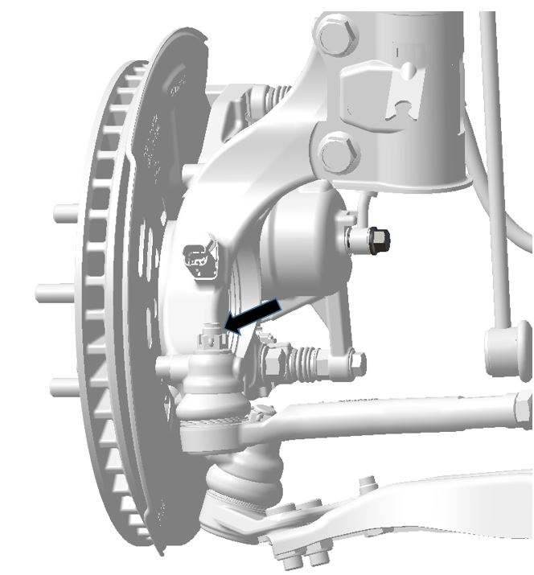
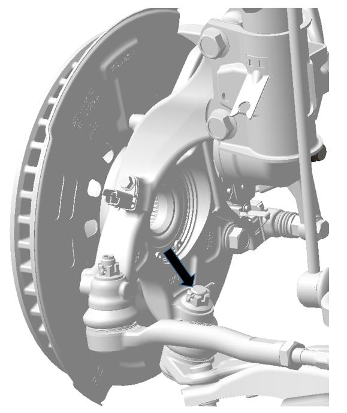
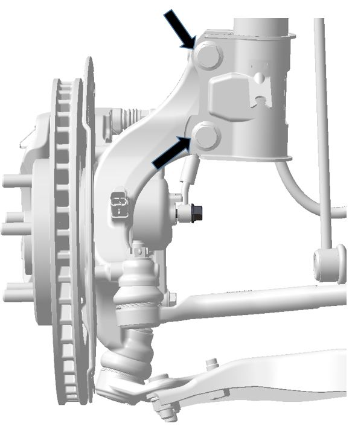

Снятие
1. Выключить Питание автомобиля.
2. Снять колесо. Ссылка Колеса и шины
3. Снять передний тормозной суппорт. Ссылка Передний тормозной суппорт
Снятие тормозного шланга пропустить.
4. Снять датчик переднего колеса. Ссылка Датчик частоты вращения колеса в сборе
5. Открутить стопорную гайку рулевой тяги.

6. Открутить гайку переднего рычага.

7. Открутить болты крепления стойки к поворотному кулаку.

Установка
1. Установка выполняется в порядке, обратном снятию.
2. Регулировка углов установки колес. Ссылка Проверка параметров регулировки углов установки передних колес